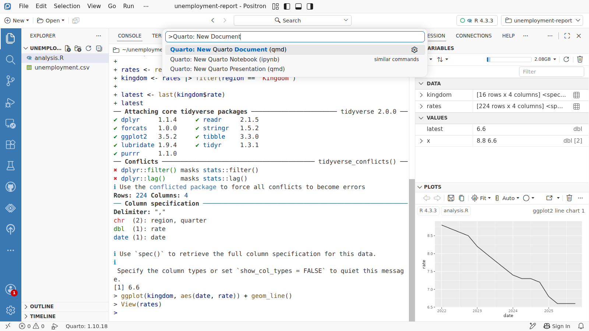
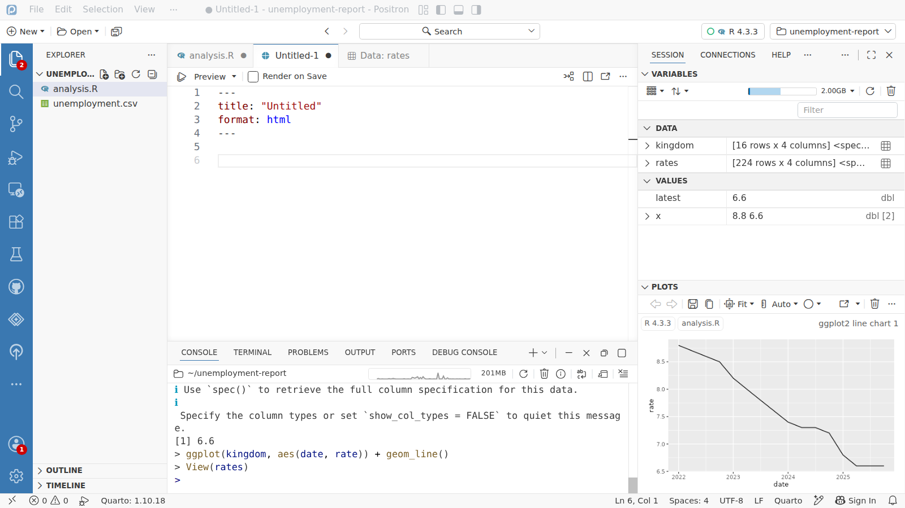
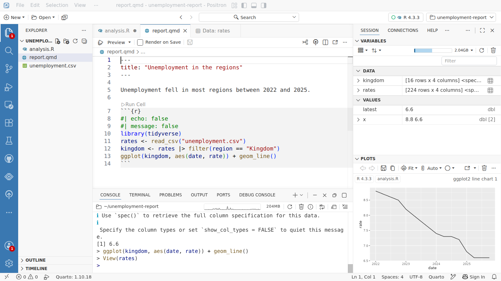
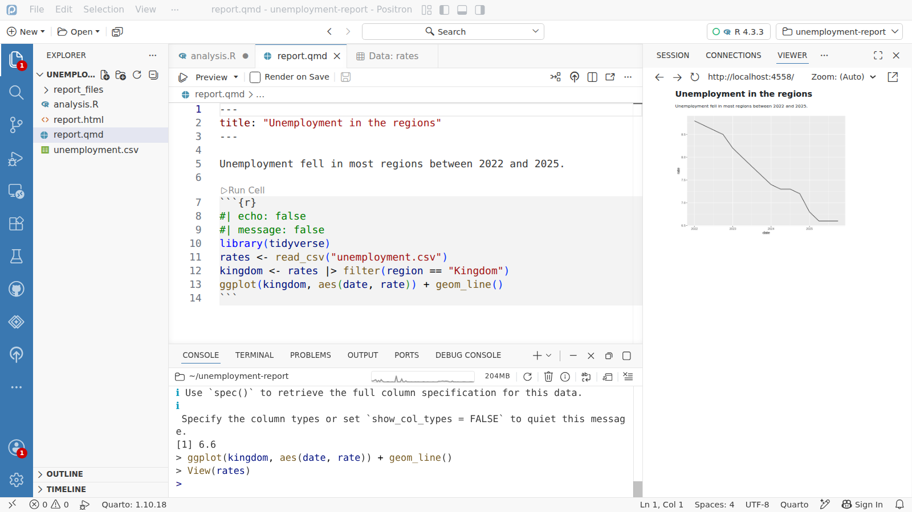

اليوم 1 · نبدأ مع Quarto
تقريرك الأول في Quarto




YAML header
report.qmd
Preview
Viewer
the finished page
1
نضغط Ctrl+Shift+P فتنفتح لوحة الأوامر، وفيها كل أمر تحتاجه. نختار منها
Quarto: New Document ويبدأ التقرير.2
مستند Quarto يبدأ بـ header بين سطرين
---، وفيه هنا شيئان: العنوان وصيغة المُخرَج.3
المثال اللي يجي جاهز مجرد بداية. نحدّد الكل ونمسحه، ونكتب تقريرنا، ثم Ctrl+S ونحفظه باسم
report.qmd.4
تحت الـ header كلامك، وبعده كود R داخل chunk محاط بثلاث علامات backtick. وهو نفس كود R اللي شغّلناه في السكربت.
5
نضغط Preview أعلى المحرّر.
6
يشغّل Quarto الكود ويعرض الصفحة جاهزة في لوحة Viewer: الكلام، والرسم البياني مرسوم من جديد. وكل هذا من ملف واحد.
7
من قريب: العنوان من الـ header، والجملة اللي كتبتها، والرسم اللي رسمه R. عدّل الملف واضغط Preview مرة ثانية، والصفحة تتبعه.